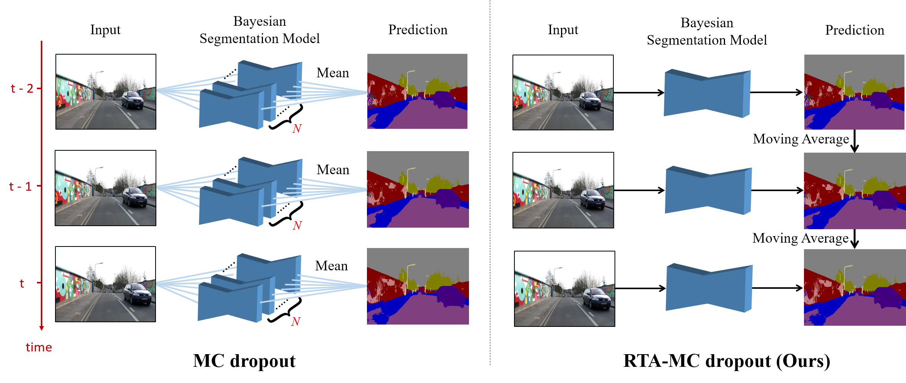

Abstract
Uncertainty estimation in deep learning becomes more important recently. A deep learning model can't be applied in real applications if we don't know whether the model is certain about the decision or not. Some literature proposes the Bayesian neural network which can estimate the uncertainty by Monte Carlo Dropout (MC dropout). However, MC dropout needs to forward the model N times which results in N times slower. For real-time applications such as a self-driving car system, which needs to obtain the prediction and the uncertainty as fast as possible, so that MC dropout becomes impractical. In this work, we propose the region-based temporal aggregation (RTA) method which leverages the temporal information in videos to simulate the sampling procedure. Our RTA method with Tiramisu backbone is 10x faster than the MC dropout with Tiramisu backbone (N = 5). Furthermore, the uncertainty estimation obtained by our RTA method is comparable to MC dropout's uncertainty estimation on pixel-level and frame-level metrics.